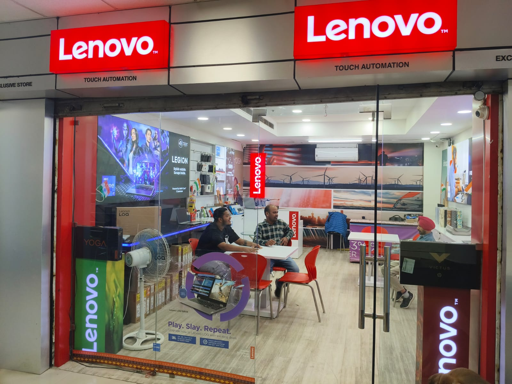

Campus Services at LPU
Livn Hair Studio and Beauty Salon
Livn Hair Studio and Beauty Salon at Lovely Professional University (LPU) is a modern salon offering a wide range of beauty and grooming services for both men and women. Located within the university campus, it caters to students, faculty, and staff, providing a convenient and high-quality option for haircuts, hairstyling, skincare, beauty treatments, and more.
Glam Studio Unisex Salon

Glam Studio Unisex Salon at Lovely Professional University (LPU) is another popular beauty and grooming destination within the campus. It is a unisex salon that caters to both male and female customers, offering a variety of hair, skincare, and beauty services in a trendy and professional environment.
Blue Dart

Blue Dart is a well-known logistics and courier company in India, providing domestic and international express delivery services. It operates across a vast network, offering services like air and ground shipping, express delivery, freight forwarding, and supply chain solutions. At Lovely Professional University (LPU), Blue Dart is typically associated with providing courier and parcel services to students, staff, and faculty, helping with the timely and reliable delivery of documents, packages, and goods.
Fashion Gallery

Fashion Gallery at Lovely Professional University (LPU) is a popular retail outlet within the campus that caters to the fashion and style needs of students, faculty, and staff. It offers a wide range of trendy and fashionable clothing, accessories, and other fashion-related items, making it a go-to place for those looking to enhance their personal style.
HP World Laptop

HP World Laptop at Lovely Professional University (LPU) refers to a special initiative at LPU where students can access HP laptops and related technologies, often with exclusive offers, discounts, and support through the HP World program. This initiative is aimed at providing students with high-performance devices that cater to their academic needs, as well as their professional development.
Dell Laptop Store
The Dell Laptop Store at Lovely Professional University (LPU) is a specialized outlet on the LPU campus that caters to the laptop and computing needs of students, faculty, and staff. As a leading global brand, Dell offers a variety of laptops and computing devices that are known for their durability, performance, and cutting-edge technology.
Laptop Store

The Laptop Store at Lovely Professional University (LPU) is an on-campus retail outlet designed to meet the laptop and technology needs of students, faculty, and staff at LPU. As part of the university's comprehensive campus facilities, the laptop store offers a variety of laptops, accessories, and services aimed at enhancing the academic and professional experience of the university community.
LENOVO
The Lenovo Store at LPU (Lovely Professional University) is a retail outlet that offers a variety of Lenovo products and services to the university's students, faculty, and staff. This store typically provides Lenovo laptops, desktops, accessories, and other tech products. The store may also offer after-sales services, warranty support, and technical assistance for Lenovo products.
Gaurav Book Stall

Gaurav Book Stall is one of the popular retail outlets located in the UniCentre building at Lovely Professional University (LPU). This book stall is a key resource for students, faculty, and staff at LPU, offering a wide range of academic, reference, and general reading materials, as well as essential stationery and other educational supplies.
Study Solutions

Study Solutions at UniCentre, located within Lovely Professional University (LPU), is an academic support and resource center aimed at helping students excel in their studies. It offers various services and resources that cater to the academic needs of students, providing assistance in areas ranging from study materials to exam preparation and personalized tutoring.
Mohanlal Fashions

Mohanlal Fashions is a popular clothing and fashion retail store located within the UniCentre building at Lovely Professional University (LPU). The store offers a wide range of trendy, stylish, and affordable clothing options for students, faculty, and staff at LPU. Whether it's casual wear, formal wear, or accessories, Mohanlal Fashions provides fashionable solutions to meet the diverse needs of the LPU community.
Sachdeva Luggage Handloom and Fashion Accessories
Sachdeva Luggage Handloom and Fashion Accessories is a well-known retail shop located in the UniCentre building at Lovely Professional University (LPU). This store caters to the diverse needs of students, faculty, and staff, offering a variety of products such as luggage, handloom items, and fashion accessories.
Paul Merchants

Paul Merchants is a well-known store located within the UniCentre building at Lovely Professional University (LPU). The store caters to a variety of needs for students, faculty, and staff, offering a range of products and services, primarily focused on travel and financial services.
Print Cafe

Print Cafe at Lovely Professional University (LPU) is a popular on-campus printing and stationery service that caters to the needs of LPU students, faculty, and staff. It offers a range of essential services related to printing, photocopying, and more.
Digital Print

Digital Print at Lovely Professional University (LPU) is another essential service provided to students, faculty, and staff on campus. It offers high-quality, fast, and affordable printing solutions for academic and personal use.
EyeCart
EyeCart at LPU is an initiative by the university's Department of Optometry. It offers affordable eye care services, including eye examinations and eyeglasses, to the university community and surrounding areas.